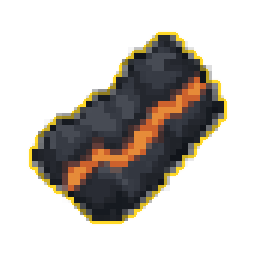

#03 · item_03ЛегендарныйMegabonkDragonfireНаша иконкаEmbercoalЖар-угольЭффект оригинала в MegabonkШанс поджечь противников драконьим огнёмИсточникНаш PNG · 03Связь по ID · JSONОсновной — актуальный · items-current64 px32 px